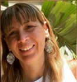

La novela, la película y el silencio
En solamente 96 páginas, Keegan cuenta la historia de Bill Furlong, un hombre que vende carbón y madera, padre de cinco hijas, que vive en un pueblo del interior de Irlanda en el año 1985.
En uno de sus repartos habituales al convento local, Furlong se encuentra con una mujer muy joven, casi adolescente, desesperada, que lo coloca no solo en la encrucijada de ayudarla o no, sino que también lo enfrenta a sus propios demonios del pasado.
Aun cuando ni el libro ni la película describen explícitamente qué es lo que sucede en ese convento, solo se menciona que es una lavandería de las Magdalenas. Sin embargo, es evidente para el personaje de Furlong que involucrarse en tal situación podría destruirle la vida. Y es que lo que ocurría en ese convento, y como en tantos otros, era siniestro.
Las instituciones de las Magdalenas
Desde la fundación del Estado Libre Irlandés en 1922 y hasta 1996, unas 10.000 niñas y mujeres fueron encarceladas, obligadas a realizar trabajos no remunerados y sometidas a graves maltratos físicos y psicológicos en las instituciones de las Magdalenas de Irlanda.
Estas instituciones, mayormente lavanderías y talleres de costura con fines de lucro, fueron carcelarias y punitivas. Estaban distribuidas en todo el país y eran dirigidas por monjas de cuatro órdenes religiosas: las Hermanas de la Misericordia, las Hermanas de Nuestra Señora de la Caridad, las Hermanas de la Caridad y las Hermanas del Buen Pastor.
Entre las mujeres y niñas que fueron confinadas se encontraban madres solteras, hijas de madres solteras, víctimas de abuso sexual, prostitutas, mujeres consideradas promiscuas, “caídas”, como solían llamarlas, o aquellas que eran simplemente percibidas como una carga para sus familias o la Iglesia.
Condiciones de vida y castigos
Las condiciones de vida dentro de los conventos eran infrahumanas. Cuando ingresaban, a menudo les cambiaban el nombre por el de una santa y les daban un número de identificación. Les cortaban el pelo y les quitaban su propia ropa, que era reemplazada por un uniforme gris.
Tenían prohibido hablar de su lugar de origen y de su familia. Se imponía la regla del silencio permanente y no tenían contacto de ningún tipo con el exterior. Las mujeres y niñas eran obligadas a lavar, planchar, empaquetar y coser ropa de la mañana a la noche, sin recibir ningún tipo de retribución.
Los castigos por negarse a trabajar incluían el aislamiento, el maltrato físico y verbal, la privación de alimento y abrigo, y humillaciones como raparlas. Era común que murieran ahí. Las que pudieron escapar, tal vez en la parte de atrás de una camioneta que repartía carbón, eran capturadas y devueltas por la guardia nacional. Y los castigos, atroces.
Si algunas tenían la fortuna de ser liberadas, estaban tan severamente desconectadas y traumatizadas que no lograban reinsertarse en la sociedad.
Complicidad del Estado y la Iglesia
El Estado nunca reguló el funcionamiento de las lavanderías de las Magdalenas, a pesar de que las reconocía y avalaba como lugares de detención y cuidado de niñas y mujeres y, aún más grave, mantenía relaciones comerciales con ellas, tal como se comprobó posteriormente.
Recién en 1993, y a partir de un escándalo que se desató de manera inesperada cuando se exhumó una fosa común donde se encontraron los restos de 155 mujeres ubicada en la propiedad de uno de los conventos donde funcionaba una de las lavanderías más extensas de Dublín, el secreto a voces fue revelado.
Sin embargo, no fue hasta el año 2011 que la agrupación “Justicia para las Magdalenas” presentó un informe ante el Comité de Torturas de las Naciones Unidas. En 2013, una comisión liderada por el senador Martin McAleese investigó la denuncia y comprobó que el Estado participó en el funcionamiento de las lavanderías en complicidad con la Iglesia católica.
En 2014, el Estado Irlandés pidió disculpas formales a las sobrevivientes y sus familiares y, a partir de 2022, otorgó indemnizaciones.
Memoria, duelo y reparación
En el parque Stephen’s Green de Dublín está emplazado un monumento que recuerda a las niñas y mujeres que pasaron y murieron por las lavanderías del horror. Todo parece poco, y lo es. No existe compensación posible para tantos años de sometimiento, dolor, complicidad y el silencio más absoluto.
Sobre la autora

María Daniela Saccone es traductora pública en idioma inglés y profesora de inglés, con sólida formación académica y experiencia docente en el ámbito universitario. Actualmente se desempeña como docente en la Universidad Nacional de Lanús, donde dicta las asignaturas Traducción Técnica II y Traducción Técnica III, correspondientes a la carrera de Traductorado Público en Idioma Inglés. Asimismo, es responsable del Seminario de Transcreación y Copywriting, que aborda las dimensiones creativas de la traducción aplicadas a contextos publicitarios y culturales en la misma carrera.